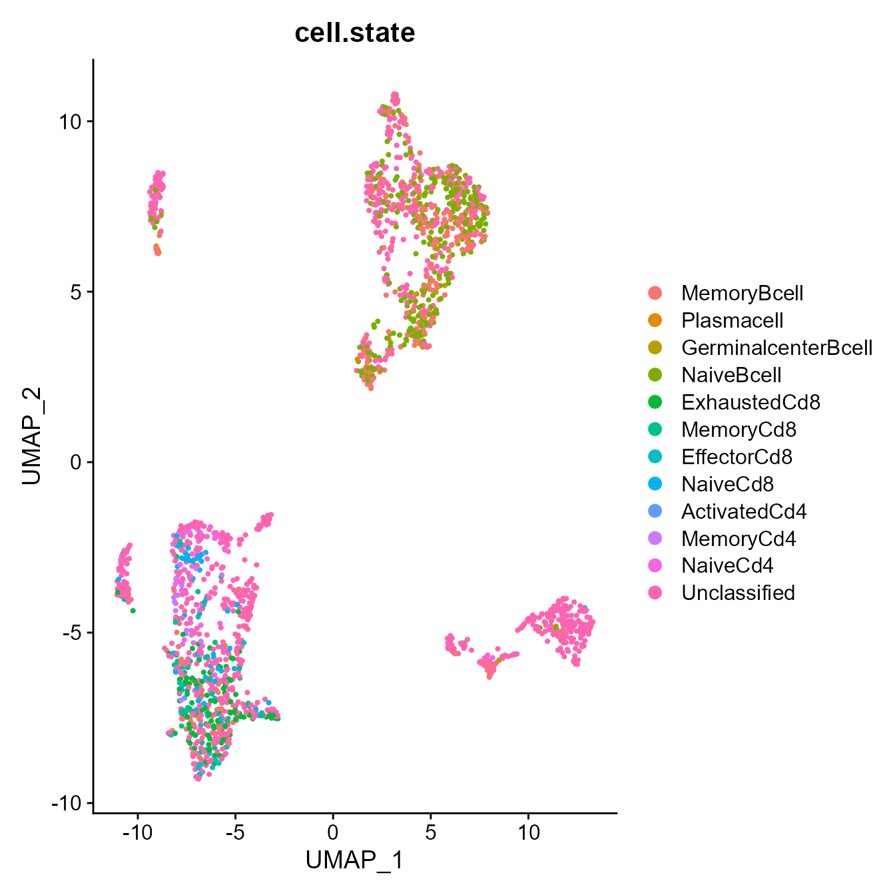
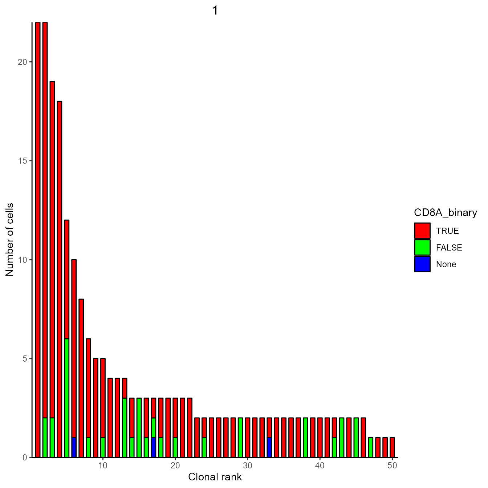

Integrating VDJ and GEX
Victor Kreiner, Alexander Yermanos
2022-07-27
Source:vignettes/vdjgex_integrate.Rmd
vdjgex_integrate.Rmd1. Introduction
The VDJ GEX matrix function and object are central Platypus, as they offer a format which stores VDJ and GEX in integrated formats. In most cases, integration of VDJ and GEX is done by the VDJ GEX matrix function. For all its parameters please refer to the VGM overview vignette. Additional or integration post-VGM is also necessary e.g. when new metadata or analysis results have been added to either datasets. Further, it can be useful to itegrate expression values of selected genes to VDJ for filtering and grouping purposes.
For these applications, the function VGM_integrate was designed.
library(Platypus)For showcasing, we download data from T cells in the CNS of aged mice. Analysis of this dataset is showcased in the Platypus Quickstart vignette.
PlatypusDB_fetch(PlatypusDB.links = c("yermanos2021a//ALL"),load.to.enviroment = T) ## [1] "yermanos2021a__VDJGEXmatrix"2. Usecase 1: Reclonotyping GEX
Several functions are available to explore GEX data by VDJ clonotypes. To use different clonotyping strategies, we can use the VGM_integrate function
#Reclonotype with different strategy
yermanos2021a__VDJGEXmatrix[[1]] <- VDJ_clonotype(yermanos2021a__VDJGEXmatrix[[1]],
clone.strategy = "cdr3.homology",
global.clonotype = T)## Clonotyping strategy: cdr3.homology## Processing sample 1 of 1## Backing up 10x default clonotyping in columns clonotype_id_10x and clonotype_frequency_10x before updating clonotype_id and clonotype_frequency columns
#Reintegrate new clonotyping info to GEX
yermanos2021a__VDJGEXmatrix <- VGM_integrate(yermanos2021a__VDJGEXmatrix)## Cells in GEX: 2064; cells in VDJ: 463
## Overlap: 455## Integrating all VDJ columns which are not in GEX to GEX## Added columns to GEX: clonotype_id; global_clonotype_frequency_cdr3.homology; global_clonotype_id_cdr3.homology; global_clonal_feature_cdr3.homology; clonotype_frequency_10x; clonotype_id; clonotype_frequencyDone, now we can plot GEX clone overlay using the new clonotyping strategy
VDJ_GEX_overlay_clones(yermanos2021a__VDJGEXmatrix[[2]], by.sample = F)## Scale for 'colour' is already present. Adding another scale for 'colour',
## which will replace the existing scale.
3. Usecase 2: Adding specific columns from GEX to VDJ
#add a new column to GEX by basic phenotyping
yermanos2021a__VDJGEXmatrix[[2]] <- GEX_phenotype(yermanos2021a__VDJGEXmatrix[[2]],
default = T)
#transferring to VDJ
yermanos2021a__VDJGEXmatrix <- VGM_integrate(yermanos2021a__VDJGEXmatrix,
columns.to.transfer = "cell.state")## Cells in GEX: 2064; cells in VDJ: 463
## Overlap: 455## Added columns to VDJ: cell.state
#and plotting this
Seurat::DimPlot(yermanos2021a__VDJGEXmatrix[[2]], group.by = "cell.state")
4. Usecase 3: Adding gene expression values to VDJ
yermanos2021a__VDJGEXmatrix <- VGM_integrate(yermanos2021a__VDJGEXmatrix,
genes.to.VDJ = c("CD3E","CD8A"),
seurat.slot = "counts")## Cells in GEX: 2064; cells in VDJ: 463
## Overlap: 455## Added columns to VDJ: CD3E; CD8ANow we can filter and show clontoype expansion based on this
yermanos2021a__VDJGEXmatrix[[1]]$CD8A_binary <- yermanos2021a__VDJGEXmatrix[[1]]$CD8A > 0
expansion_plot <- VDJ_clonal_expansion(yermanos2021a__VDJGEXmatrix[[1]],
color.by = "CD8A_binary",
group.by = "none")
expansion_plot[[1]]## [[1]]
We can see that most expanded clones in this dataset are CD8+. “none” or blue indicates that their is no GEX information for these cells
5. Session information
## R version 4.0.5 (2021-03-31)
## Platform: x86_64-w64-mingw32/x64 (64-bit)
## Running under: Windows 10 x64 (build 19044)
##
## Matrix products: default
##
## locale:
## [1] LC_COLLATE=German_Germany.1252 LC_CTYPE=German_Germany.1252
## [3] LC_MONETARY=German_Germany.1252 LC_NUMERIC=C
## [5] LC_TIME=German_Germany.1252
##
## attached base packages:
## [1] stats graphics grDevices utils datasets methods base
##
## other attached packages:
## [1] Platypus_3.4.0 SeuratObject_4.0.4 Seurat_4.1.0 forcats_0.5.1
## [5] stringr_1.4.0 purrr_0.3.4 readr_2.1.2 tidyr_1.1.3
## [9] tibble_3.1.2 ggplot2_3.3.5 tidyverse_1.3.1 dplyr_1.0.7
##
## loaded via a namespace (and not attached):
## [1] readxl_1.3.1 backports_1.4.1 systemfonts_1.0.4
## [4] plyr_1.8.6 igraph_1.2.6 lazyeval_0.2.2
## [7] splines_4.0.5 listenv_0.8.0 scattermore_0.7
## [10] digest_0.6.27 useful_1.2.6 htmltools_0.5.2
## [13] fansi_0.5.0 magrittr_2.0.1 memoise_2.0.1
## [16] tensor_1.5 cluster_2.1.2 ROCR_1.0-11
## [19] tzdb_0.2.0 globals_0.14.0 modelr_0.1.8
## [22] matrixStats_0.59.0 pkgdown_2.0.2 spatstat.sparse_2.0-0
## [25] colorspace_2.0-2 rvest_1.0.2 ggrepel_0.9.1
## [28] textshaping_0.3.6 haven_2.4.3 xfun_0.27
## [31] crayon_1.5.0 jsonlite_1.7.2 spatstat.data_2.1-2
## [34] survival_3.2-11 zoo_1.8-9 glue_1.4.2
## [37] polyclip_1.10-0 gtable_0.3.0 leiden_0.3.9
## [40] future.apply_1.8.1 abind_1.4-5 scales_1.1.1
## [43] DBI_1.1.2 miniUI_0.1.1.1 Rcpp_1.0.7
## [46] viridisLite_0.4.0 xtable_1.8-4 reticulate_1.20
## [49] spatstat.core_2.2-0 htmlwidgets_1.5.4 httr_1.4.2
## [52] RColorBrewer_1.1-2 ellipsis_0.3.2 ica_1.0-2
## [55] farver_2.1.0 pkgconfig_2.0.3 uwot_0.1.10
## [58] sass_0.4.0 dbplyr_2.1.1 deldir_0.2-10
## [61] utf8_1.2.1 labeling_0.4.2 tidyselect_1.1.1
## [64] rlang_0.4.10 reshape2_1.4.4 later_1.2.0
## [67] munsell_0.5.0 cellranger_1.1.0 tools_4.0.5
## [70] cachem_1.0.6 cli_3.1.1 generics_0.1.2
## [73] broom_0.7.12 ggridges_0.5.3 evaluate_0.14
## [76] fastmap_1.1.0 yaml_2.2.1 ragg_1.2.1
## [79] goftest_1.2-2 knitr_1.37 fs_1.5.2
## [82] fitdistrplus_1.1-6 RANN_2.6.1 pbapply_1.5-0
## [85] future_1.24.0 nlme_3.1-152 mime_0.11
## [88] xml2_1.3.3 compiler_4.0.5 rstudioapi_0.13
## [91] plotly_4.10.0 png_0.1-7 spatstat.utils_2.2-0
## [94] reprex_2.0.1 bslib_0.3.1 stringi_1.7.4
## [97] highr_0.9 desc_1.4.0 lattice_0.20-44
## [100] Matrix_1.3-4 vctrs_0.3.8 stringdist_0.9.8
## [103] pillar_1.7.0 lifecycle_1.0.1 spatstat.geom_2.2-0
## [106] lmtest_0.9-38 jquerylib_0.1.4 RcppAnnoy_0.0.18
## [109] data.table_1.14.0 cowplot_1.1.1 irlba_2.3.3
## [112] httpuv_1.6.1 patchwork_1.1.1 R6_2.5.1
## [115] promises_1.2.0.1 KernSmooth_2.23-20 gridExtra_2.3
## [118] parallelly_1.30.0 codetools_0.2-18 MASS_7.3-54
## [121] assertthat_0.2.1 rprojroot_2.0.2 withr_2.4.3
## [124] sctransform_0.3.3 mgcv_1.8-36 parallel_4.0.5
## [127] hms_1.1.1 grid_4.0.5 rpart_4.1-15
## [130] rmarkdown_2.11 Rtsne_0.15 shiny_1.7.1
## [133] lubridate_1.8.0